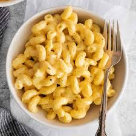

Cheese Pasta

Cheese Pasta is a delightful pasta dish made with tender pasta, creamy cheese sauce, and a variety of seasonings.
Ingredients:
- 2 cups pasta (any shape)
- 2 cups shredded cheese (cheddar or mozzarella)
- 1 cup milk
- 2 tablespoons butter
- 2 tablespoons all-purpose flour
- 1/4 teaspoon garlic powder
- 1/4 teaspoon onion powder
- Salt and pepper to taste
Instructions:
- Boil pasta according to package instructions. Drain and set aside.
- In a saucepan, melt butter over medium heat. Stir in flour and cook for 1-2 minutes until lightly browned.
- Gradually whisk in milk until smooth. Cook, stirring constantly, until the sauce thickens, about 5 minutes.
- Stir in shredded cheese until melted and smooth.
- Season with garlic powder, onion powder, salt, and pepper to taste.
- Add cooked pasta to the cheese sauce and toss until well coated.
- Serve hot, optionally garnished with fresh herbs or additional shredded cheese.